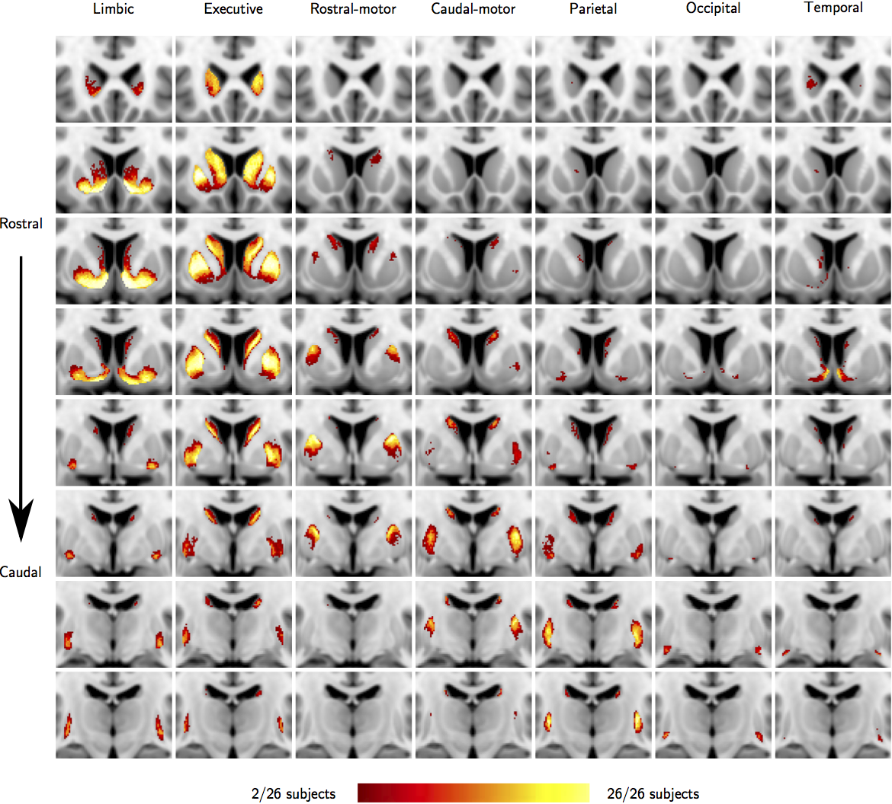
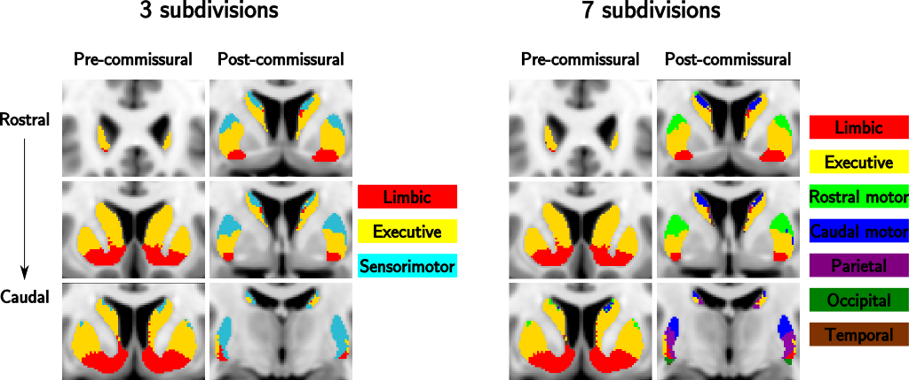
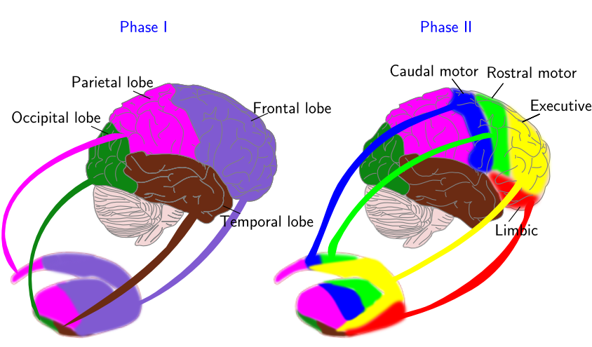

Oxford-GSK-Imanova Striatal Connectivity Atlas
striatum-con-prob-thr25/50
Probabilistic maps of the cortical–striatal connectivity profiles, calculated from 26 subjects. The probabilities stored in these maps are calculated for each cortical zone and each striatal voxel, with one map/image of the striatum provided for each zone. These probabilities are defined as the number of subjects with a within-subject-connection-probability (between the striatal voxel and the cortical target) higher than 50%, divided by the total number of subjects. There is also a version provided that uses a threshold of 25% (striatum-con-prob-thr25). The within-subject-connection-probabilities are calculated using probabilistic diffusion tractography, where a connection probability in each voxel, to each cortical target, is estimated as described by Johansen-Berg et al. (2005). In brief, the within-subject-connection-probability from a voxel to a particular cortical zone is defined as the total number of samples from that voxel that reach the particular cortical area divided by the total number of samples from that voxel that reached any cortical area. Figure 1 shows the 7 cortical connectivity profiles of the striatum-con-prob-thr50 atlas.

Figure 1: The striatum-con-prob-thr50 atlas
striatum-con-label-thr25/50-7sub
Probabilistic connectivity striatal atlas segmented into 7 sub-regions according to cortical-striatal anatomical connections (7 cortical targets: limbic, executive, rostral-motor, caudal-motor, parietal, occipital and temporal cortical zones). Each striatal voxel is classified (labeled) according to the cortical region that has the highest probability of connection. These probabilities are defined as the number of subjects with a within-subject-connection-probability (between the striatal voxel and the cortical target) higher than 25% or 50%, divided by the total number of subjects. Figure 2 shows the striatum-con-label-thr50-7sub atlas.

Figure 2. Striatum-con-label-thr50-3sub and Striatum-con-label-thr50-7sub atlas
striatum-con-label-thr25/50-3sub
- Probabilistic connectivity striatal atlas segmented into 3 sub-regions according to cortical-striatal anatomical connections. To construct this atlas 5 instead of 7 cortical targets were employed: limbic, executive, rostral-motor, caudal-motor and parietal. Occipital and temporal cortical projections were excluded. Each striatal voxel is classified (labeled) according to the cortical region that has the highest probability of connection. These probabilities are defined as the number of subjects with a within-subject-connection-probability (between the striatal voxel and the cortical target) higher than 25% or 50%, divided by the total number of subjects. Subsequently the resulting sub-regions from the rostral-motor, caudal-motor and parietal cortical zones were combined to approximate the sensorimotor related striatal sub-region.
Construction of the connectivity atlases
To obtain the connectivity-based functional striatal sub-territories, DWI data and probabilistic tractography algorithms (Behrens et al. 2003) were employed. In total 26 healthy human volunteers were scanned and to achieve the connectivity-base subdivision in each subject, a two-step procedure was applied (figure 3): Phase I: the projections from the four brain lobes (frontal, parietal, occipital, temporal) to the striatum were calculated and the striatal areas associated with each lobe were established; Phase II: The frontal lobe was subdivided into four anatomical ROIs, each associated with a particular functional specialization (limbic, executive, rostral motor and caudal motor), and projections between these anatomical ROIs and the striatal area associated with the frontal lobe was estimated.

Figure 3. Methods overview
Cortical Targets
Limbic
- The structures comprising the limbic anatomical ROI are the anterior orbital gyrus, posterior orbital gyrus, medial orbital gyrus, gyrus rectus and subcallosal gyrus – ventral anterior cingulate (parolfactory area - area 25).
Executive
- The functional map proposed by Petrides (Petrides, 2005) was adopted to delineate areas 9, 9/46 and area 10 of dorsolateral prefrontal cortex. Anatomically the ROI consisted of the rostral superior and middle frontal gyri and the dorsal prefrontal cortex (3mm above the mid-sagittal most anterior and dorsal tip of gyrus rectus where area 10 is situated).
Rostral-Motor
- The caudal portions of lateral and medial superior gyrus, and the caudal middle and inferior frontal gyri were included in the rostral-motor target. These anatomical regions correspond functionally to rostral area 6, supplementary motor area (SMA), pre-SMA and the frontal eye field region.
Caudal-Motor
- Includes the pre-central gyrus, which corresponds functionally to the primary motor cortex (area 4), and the caudal premotor area (caudal area 6). The paracentral lobule was excluded from the mask.
Parietal, occipital and temporal cortical lobes were obtained from the Harvard-Oxford cortical atlas (figure 4).
striatumconn/striatumcon-fig2.png "Figure 4: Cortical targets")
Figure 4: Cortical targets
Detailed information about the construction of the connectivity atlas can be found in: Tziortzi et al. Connectivity-based functional analysis of dopamine release in the striatum using DWI-MRI and Positron Emission Tomography